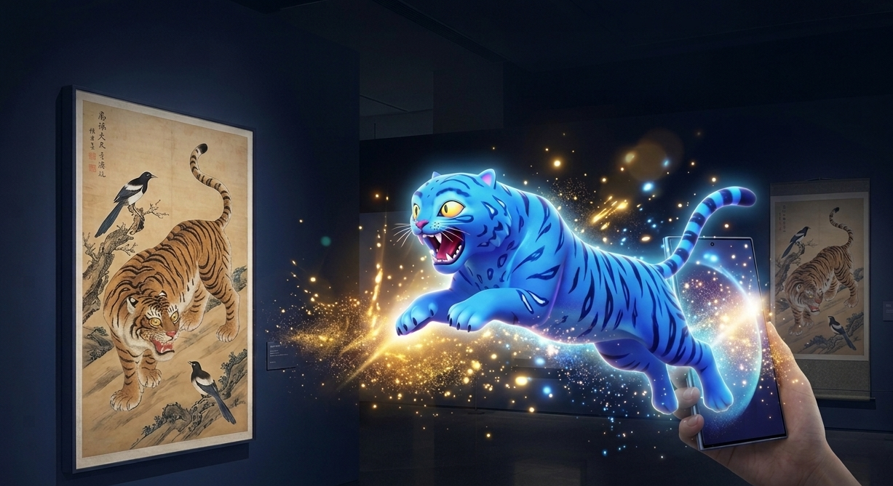

Key Visual Concept
호작도에서 현실로 튀어나오는 체험
전통 민화 속 호작도를 Galaxy S26의 몰입형 비주얼과 캐릭터 연출로 새롭게 경험하는 디지털 팝업입니다.
팝업 소개
메인 화면에서 콘셉트를 확인한 뒤, 다음 화면에서 호작도를 감상하고 더피를 현실 공간으로 불러오는 체험을 진행할 수 있습니다.
체험 순서
- 메인 비주얼 및 콘셉트 확인
- 호작도 작품 감상
- 더피 등장 및 AR 실행
- 퀴즈 및 사진 공유하기

Key Visual Concept
전통 민화 속 호작도를 Galaxy S26의 몰입형 비주얼과 캐릭터 연출로 새롭게 경험하는 디지털 팝업입니다.
메인 화면에서 콘셉트를 확인한 뒤, 다음 화면에서 호작도를 감상하고 더피를 현실 공간으로 불러오는 체험을 진행할 수 있습니다.
아래 작품 이미지를 마우스로 움직이면 확대된 느낌으로 자세히 볼 수 있습니다. 오른쪽의 더피 등장 버튼을 누르면 지원 기기에서 카메라 AR이 실행됩니다.

호작도는 호랑이와 까치가 함께 등장하는 전통 민화입니다. 호랑이는 위엄을, 까치는 반가운 소식과 재치를 상징하며, 민화에서는 무섭기보다 익살스럽고 친근한 이미지로 표현되기도 합니다.
Q. 다음 중 호작도에 등장하지 않는것은 무엇일까요?